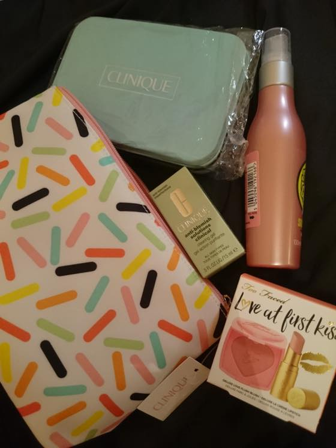
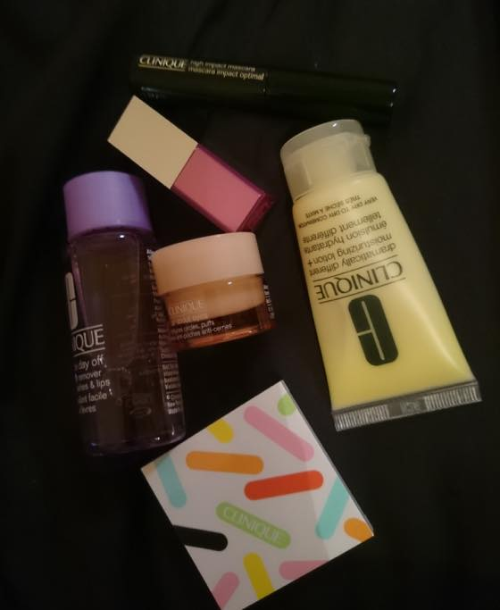
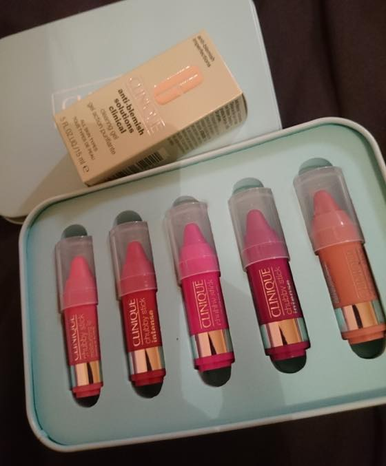
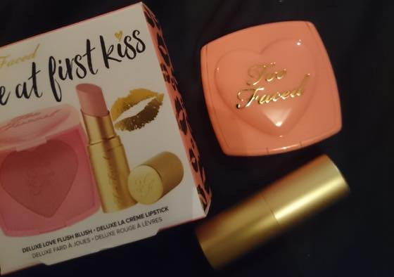

10월의 충동구매 :p
크리니크 제품 2개 구매하면 기프트셋을 준다는 광고에 낚여서 클리어링 젤 + 쳐비스틱 미니셋을 구매했습니다.
전 왜 이리 파우치 / 기프트셋 / 미니사이즈에 약한걸까요 -_-;;;;
기프트셋 구성이랑 패키징 구경하는거 대따 좋아합니다 ㅋㅋㅋㅋㅋㅋㅋㅋ

크리니크 'Sweet Kissers' 크리스마스 기프트셋 (그렇습니다!! 이곳은 이미 크리스마스 프로모션이 시작되었습니다 ^^;;;)
크리니크 'Clearing gel' / 그동안 바디샵, 심플, 오리진스 등등 사용해봤는데 크리니크 제품은 처음이네용. 호기심에 구매
그리고 파우치
역시 사이즈가 쪼매난게 귀여워서(.....) 구매한 투페이스드 Love at First Kiss' 메이크업 듀오 셋
블러셔 발색이 엄청 잘 되어서 놀랐습니당
샤워후에 몸에 로션이라던가 전혀 바르지 않는편인데 최근 물놀이 댕겨왔더니 무진장 건조해짐을 느껴 구입한 솝앤글로리 바디미스트
아님 걍 나이가 들어서 이제 보습을 부지런히 해줘야 하는건가 싶기도 합니당;; OTL
20대 초반에는 비행기안이 건조하단 소리가 무슨뜻인지 당췌 이해할수 없었는데 이제는 뱅기만 타면 느므 실감합니다 ;ㅂ;

파우치안 구성품
아이크릠 / 메이크업리무버 / 수분크림 / 섀도우+블러시 / 팝글레이즈 립스틱 / 마스카라 :)
귀욥당//// (<-;;;)


그리고 PIXI에서 충동구매한 미니립스틱 기프트셋이 배송오고있습니다 ㅋㅋㅋㅋㅋ
미니어쳐 집착중이에요;;; 끝이없숴;;;